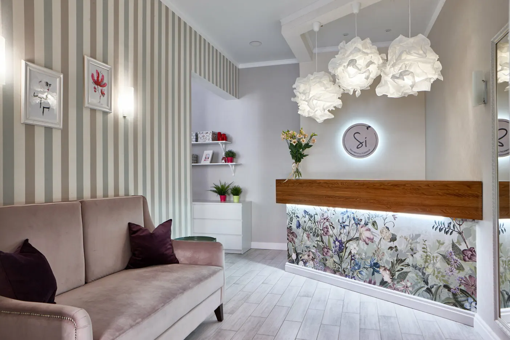
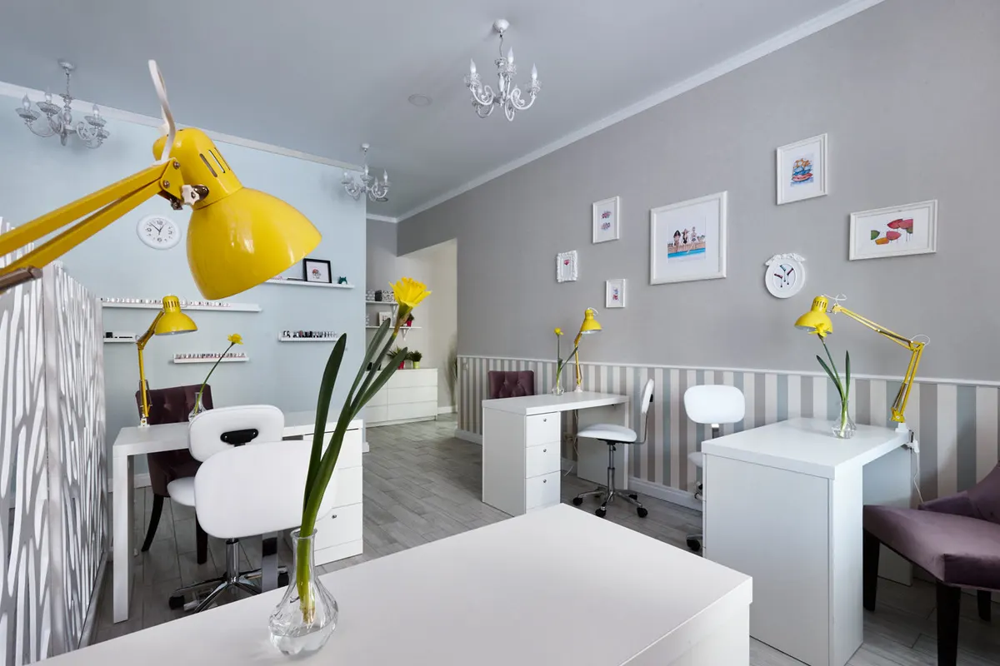
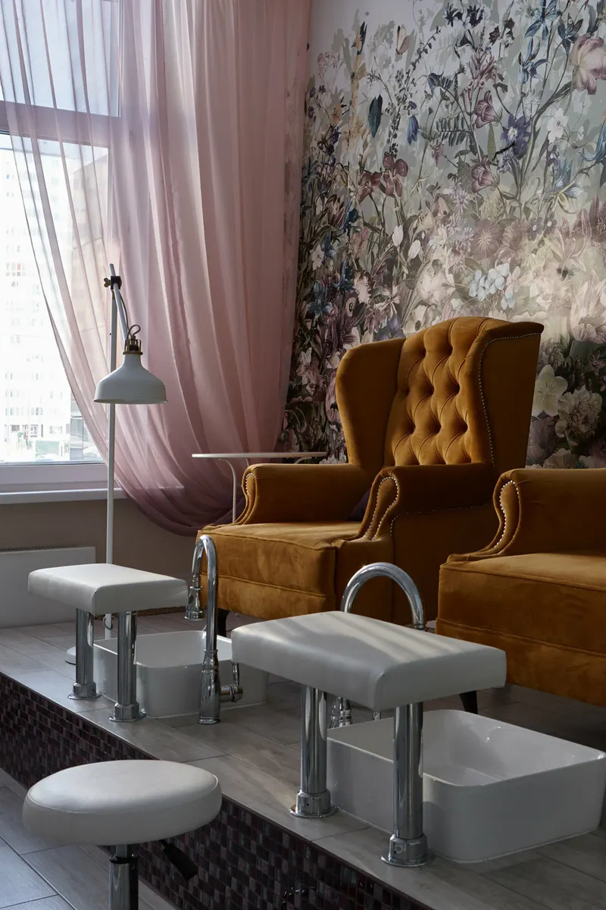
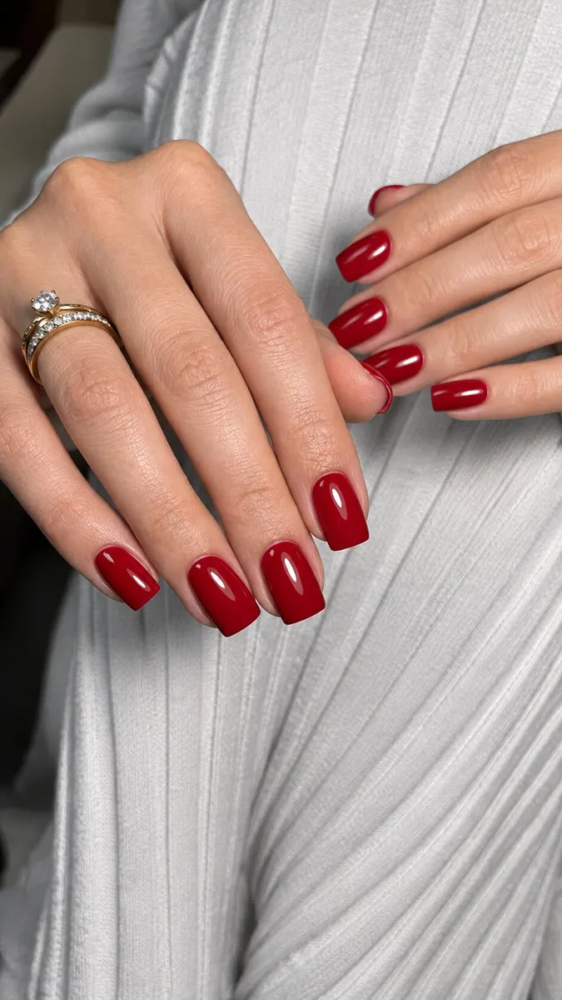

Салон красоты во Внуково · Москва
Маникюр и педикюр во Внуково: цены до записи
Маникюр аппаратный – 1550 ₽, с гель-лаком – от 2590 ₽. Мастер или топ-мастер – цена видна заранее. Запись уйдёт в WhatsApp.
- 5,0 на Яндекс Картах, 480 отзывов
- Мастер и топ-мастер – разные цены
- Каждый день с 10:00 до 22:00

Цены на услуги – до записи
Прайс с карточки на Яндекс.Картах, он давно не обновлялся. Цена зависит от уровня мастера: мастер или топ-мастер.
Маникюр
- Маникюр аппаратный или комбинированныймастер1 550 ₽
- Маникюр аппаратный или комбинированныйтоп-мастер1 700 ₽
- Маникюр со снятием и гель-лакоммастер2 590 ₽
- Маникюр со снятием и гель-лакомтоп-мастер2 890 ₽
- Маникюр с укреплением гелем и гель-лакоммастер2 990 ₽
- Маникюр с укреплением гелем и гель-лакомтоп-мастер3 300 ₽
- Парафинотерапия для рук400 ₽
Педикюр
- Аппаратный педикюр без покрытиямастер2 500 ₽
- Аппаратный педикюр с гель-лакоммастер3 100 ₽
- Smart педикюр без покрытиямастер2 700 ₽
- Smart педикюр с гель-лакомтоп-мастер3 600 ₽
- Обработка пальчиков или стоп без покрытиямастер2 150 ₽
- Парафинотерапия для ног400 ₽
Наращивание
- Наращивание ногтей до 2,5 см5 900 ₽
- Наращивание ногтей более 2,5 см6 900 ₽
- Коррекция наращённых ногтейдо 3 недель носки4 900 ₽
- Снятие наращённых у насбесплатно
- Снятие наращённых в другой студии700 ₽
Цены на сайте взяты с карточки Яндекс.Карт, она давно не обновлялась: точную сумму подтвердим при записи. Брови, ресницы и услуги для мужчин – в полном прайсе карточки.
Как записаться
- 01
Выбираете услугу, день и время
В окне записи выше: услуга из прайса, день на неделю вперёд, свободное время.
- 02
Нажимаете «Записаться»
Откроется WhatsApp салона, в сообщении уже готов текст с вашим выбором.
- 03
Приходите на улицу Лётчика Ульянина, 7Б
Район Внуково. Ресепшн, рабочие места и педикюрное кресло – на фото ниже.



Что пишут гости салона
Держится 5–6 недель
«Делают ногти так, что иногда и по 5-6 недель хожу-ничего не отваливается и не болит» – Марина М, 19 августа.
Чисто, чай и кофе
«Приятный салон, всё чисто, всегда предложат чай/кофе» – Ирина Потёмкина, 13 октября 2025.
Аккуратно и качественно
«Всё аккуратно ,красиво и качественно.» – ~Лидия~, 23 сентября.
Отличный маникюр и педикюр
«Спасибо Наталии за отличный маникюр и педикюр!» – Галина Данилова, 25 июня.
Отзывы с Яндекс.Карт
«Второй раз прихожу на маникюр к мастеру Гаяне. Замечательно выполнена работа. Всё аккуратно ,красиво и качественно. Гаяна,милая и приветливая девушка ,очень приятно с ней общаться. Всем рекомендую посетить этот салон.Я очень рада,что именно в этом салоне нашла замечательного специалиста в работе с ноготками.»
~Лидия~ · 23 сентября
«Спасибо Наталии за отличный маникюр и педикюр! Всё аккуратно, красиво и с душой. Очень приятный мастер и прекрасный результат. Осталась довольна на 100%, обязательно вернусь снова! 💐✨»
Галина Данилова · 25 июня
«Приятный салон, всё чисто, всегда предложат чай/кофе 🥰 Хожу к мастеру Гаяне - прекрасный мастер! 🫶🏻 Ухожу всегда с хорошим маникюром и замечательным настроением 🔥 Однозначно советую салон для посещения!»
Ирина Потёмкина · 13 октября 2025
Отзывы с карточки на Яндекс.Картах, без правок.
Частые вопросы
Сколько стоит маникюр?
Аппаратный – от 1550 ₽, со снятием и гель-лаком – от 2590 ₽, с укреплением гелем и гель-лаком – от 2990 ₽.
Чем отличается мастер от топ-мастера?
Услуга та же, цена выше у топ-мастера: например, маникюр со снятием и гель-лаком – 2590 ₽ у мастера и 2890 ₽ у топ-мастера.
Сколько стоит наращивание?
До 2,5 см – 5900 ₽, более 2,5 см – 6900 ₽. Снятие наращённых ногтей у нас – бесплатно.
Где вы находитесь?
Москва, район Внуково, улица Лётчика Ульянина, 7Б.
Когда вы работаете?
Каждый день с 10:00 до 22:00.
Запись на ближайшие дни
- Адрес
- улица Лётчика Ульянина, 7Б, район Внуково, Москва
- Часы
- Ежедневно 10:00–22:00
- Телефон
- +7 (903) 161-99-99